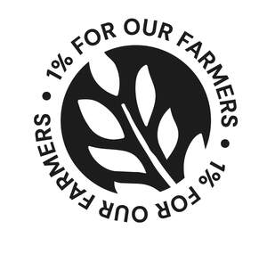
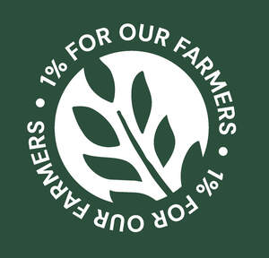
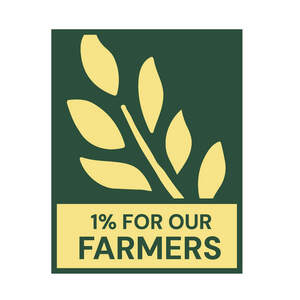
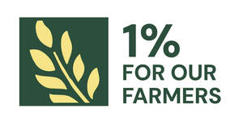

Trade Mark Journal No.2026/006 6 February 2026
UK00004182017 31 March 2025 (1,5,7,8,12,14,18,20,25,28,29,30,31,32,33)
Certification Mark
Mark 1

Mark 2

Mark 3

Mark 4

Mark 5

Mark 6

- Class 1
- Chemicals for use in industry, science and photography, as well as in agriculture, horticulture and forestry; substrates used in agriculture, horticulture and forestry; chemicals for use in agriculture; chemicals for use in horticulture; chemicals for use in forestry; chemical preparations for use in livestock farming; unprocessed artificial resins, unprocessed plastics; fire extinguishing and fire prevention compositions; tempering and soldering preparations; substances for tanning animal skins and hides; adhesives for use in industry; putties and other paste fillers; compost; manures; fertilisers; biological preparations for use in industry and science; fertilisers for use in agriculture; fertilisers for use in horticulture; fertilising preparations; natural fertilisers; organic fertilisers; biosolutions; biostimulants being plant growth stimulants; biostimulants being plant nutrition preparations; biostimulants being plant growth stimulants for use in organic farming; biostimulants being plant nutrition preparations for use in organic farming; biofertilisers; plant growth regulators; plant growth regulating preparations; plant growth regulators for agricultural use; chemicals for the treatment of seeds and seed grains; biological preparations for the treatment of seeds and seed grains; chemical preparations for coatings of fertilisers; biological preparations for coatings of fertilisers; micronutrients; macronutrients; soil treatment preparations; soil amendments; organic soil amendments.
- Class 5
- Pharmaceutical preparations; medical preparations; veterinary preparations; sanitary preparations for medical purposes; dietetic food and substances adapted for medical or veterinary use; baby food; dietary supplements for human beings and animals; wound dressings; disinfectants; preparations for destroying vermin; fungicides; herbicides.
- Class 7
- Machines; agricultural machinery; agricultural machines for harvesting, cultivating, ploughing, sowing, and fertilising; machine tools; power-operated tools; agricultural tools; motors and engines, except for land vehicles; machine coupling and transmission components, except for land vehicles; agricultural implements, other than hand-operated hand tools; incubators for eggs; automatic vending machines; combine harvesters; seed drills for agricultural machines; parts and fittings for the aforesaid.
- Class 8
- Hand tools and implements; agricultural hand tools; horticultural hand tools; cutlery; electric and non-electric hand implements for personal grooming; parts and fittings for the aforesaid.
- Class 12
- Vehicles; apparatus for locomotion by land, air or water; tractors; tractor trailers; livestock trailers; tractors for agricultural purposes; road trucks; parts and fittings for the aforesaid.
- Class 14
- Jewellery; watches; horological and chronometric instruments; cuff links; tie pins; tie clips; key rings; key chains; jewellery boxes; precious metals; precious stones.
- Class 18
- Leather and imitations of leather; animal skins and hides; luggage and carrying bags; handbags; sports bags; umbrellas and parasols; walking sticks; whips, harnesses and saddlery; collars, leashes and clothing for animals; hunting crops; riding crops; horse saddles.
- Class 20
- Furniture; mirrors; picture frames; containers, not of metal, for storage or transport; unworked or semi-worked bone, horn, whalebone or mother-of-pearl; shells; meerschaum; yellow amber; mattresses; bed bases; pillows; indoor window blinds and shades; mirrors.
- Class 25
- Clothing; footwear; headgear.
- Class 28
- Games; toys; playthings; video game apparatus; gymnastic and sporting articles; decorations for Christmas trees.
- Class 29
- Meat, fish, poultry and game; meat extracts; meat products; processed meat products; steaks of meat, fish, game and poultry; pork and beef jerky; poultry, pork and beef meatballs; sausage meat; meat, fish, game or poultry sausages; turkey meat; fresh, cooked, roast, minced, fried, boiled, stewed, dried, salted, sliced, frozen, preserved, prepared and processed meat, fish, poultry and game; meat, fish, game and poultry burgers; canned or tinned meat, fish, poultry and game; freeze-dried meat, fish, poultry and game; frozen, cooked and prepared meat, fish, poultry and game dishes; frozen, cooked and prepared meat, fish, poultry and game products; crab meat; duck meat; meat, fish, poultry and game pâté; meat, fish, poultry and game substitutes; seitan [meat substitute]; vegetable-based meat substitutes; meat gelatines; meat, fish, game and poultry pastes; food pastes made from meat, fish, game and poultry; ground meat, fish, game and poultry; meat, fish, game and poultry jellies, spreads and preserves; meat, fish, game and poultry stocks; prepared meals made from meat [meat predominating]; tallow [for food]; imitation crab meat; pie fillings of meat; meat, fish, game and poultry extracts, fats and oils; meat and fish floss; lyophilised meat; bottled cooked meat; preserved, frozen, dried, cooked, pressed, processed, fermented, candied, stewed, peeled, and pulped fruits or vegetables; fruit and vegetable jellies, jams, compotes and spreads; fruit marmalade; fruit salads; fruit and vegetable snacks; snack foods based on fruit and vegetables; fruit pectin; fruit desserts; fruit rinds; fruit and vegetable purées; fruit and vegetable paste; preserves made from fruit and vegetables; fruit peel; fruit conserves; aromatised fruit; fruit leathers; fruit chips; crystallised fruit; fruit flavoured yoghurts; fruit juices for cooking; fruit jellies [not being confectionery]; mixtures of fruit and nuts; pre-cut, cut and prepared vegetables and fruit; pre-cut vegetable salads; poultry salads; canned, sliced and tinned fruits and vegetables; grilled vegetables; vegetables in sauces and brines; freeze-dried fruits and vegetables; dehydrated fruit and vegetables; fruit and vegetable mousses; bottled vegetables; processed fruits, fungi, vegetables, nuts and pulses; mixed vegetables and fruit; fruit and vegetable salads; vegetable oils, extracts and fats for food; vegetable juices, extracts and fats for cooking; fruit juices for cooking; vegetable chips; vegetable crisps; vegetable burgers; prepared vegetable dishes; lyophilised vegetables; quick frozen vegetable dishes; prepared dishes consisting primarily of fishcakes, vegetables, boiled eggs, and broth (oden); prepared vegetable dishes; tagine [prepared meat, fish or vegetable dish]; frozen meals consisting primarily of vegetables; eggs; eggs, including birds' eggs and egg products, quail eggs, hen eggs, duck eggs, sturgeon eggs, snail eggs for human consumption, fish eggs for human consumption, egg yolks, egg whites, scotch eggs, century eggs, tea flavoured eggs, liquid eggs; pickled, powdered, frozen, marinated, dried, processed, canned, salted and rolled eggs; egg substitutes; egg muffins; omelettes; steamed egg hotchpotch; milk, cheese, butter, yogurt and other milk products; rice, soya, almond, hemp, coconut and oat milk for use as a milk substitute; milk tea, milk predominating; goat milk; milk curds; milk beverages, milk predominating; curdled milk; protein milk; powdered milk; milk solids; powdered soya milk; evaporated milk; peanut milk; milk drinks; fermented milk; powdered goat milk; milk powder; milk beverages; flavoured milk; albumin milk; milk (albumin -); sheep milk; milk beverages with high milk content; sour milk; skimmed milk; milk-based drinks [milk predominating]; organic milk; acidophilus milk; soy milk beverages; condensed milk; kefir [milk beverage]; milk-based beverages [milk predominating]; coconut milk [beverage]; coconut milk used as beverage; milkshakes; kephir [milk beverage]; dried milk; milk substitutes; milk beverages with cocoa; milk products; coconut milk powder; soured milk; milk powder for foodstuffs; non-dairy milk substitutes; cows' milk; yoghurt made from goats' milk; koumiss [milk beverage]; coconut milk for cooking; soya bean milk; flavoured milk beverages; flavoured milk drinks; dried milk for food; cocoa flavoured milk beverages; kumiss [milk beverage]; kumys [milk beverage]; soya-based beverages used as milk substitutes; kumyss [milk beverage]; dried milk powder; fermented baked milk; oat-based beverages [milk substitute]; beverages made from milk; powdered milk for food purposes; plant-based milk substitutes; flavoured milk powder for making drinks; milk drinks containing fruits; prostokvasha [soured milk]; milk powder for food purposes; koumiss [kumiss] [milk beverage]; milk beverages containing fruits; milk powder for nutritional purposes; oils and fats for food; oils for food; oils and fats; hydrogenated oils for food; edible oils and fats; vegetable fats for food; vegetable oils for food; animal oils for food; animal fats for food; nut oils for food; hardened oils [hydrogenated oil for food]; hardened oils for food; vegetable fats for cooking; blended oils for food; edible fats; cooking fats; coconut oil and fat [for food]; edible oils for use in cooking foodstuffs; flaxseed oil for food; edible oils; fatty substances for the manufacture of edible fats; grapeseed oil for food; linseed oil for food; edible oils for glazing foodstuffs; cooking oils; coconut oil for food; canola oil for food; rapeseed oil for food; olive oil for food; olive oil [for food]; linseed oils [edible]; lard for food; lard [for food]; almond oil for food; sunflower oil for food; sunflower oil [for food]; edible oils derived from fish [other than cod liver oil]; bone oil [for food]; bone oil for food; corn fats; sesame oil [for food]; sesame oil for food; colza oil for food; palm oil for food; palm oil [for food]; peanut oil [for food]; peanut oil for food; olive oils; flavoured edible oils; blended oil [for food]; blended oil for food; whale oil for food; flavoured oils; corn oil [for food]; corn oil for food; maize oil for food; chia seed oil for food; soybean oil [for food].
- Class 30
- Coffee, tea, cocoa and substitutes therefor; rice, pasta and noodles; tapioca and sago; flour and preparations made from cereals; bread, pastries and confectionery; chocolate; ice cream, sorbets and other edible ices; sugar, honey, treacle; yeast, baking-powder; salt, seasonings, spices, preserved herbs; vinegar, sauces and other condiments; ice (frozen water); decaffeinated coffee; iced coffee; chocolate coffee; coffee beverages and drinks; unroasted, roasted, ground and sugar-coated coffee beans; mixtures of malt coffee with coffee; unroasted coffee; coffee extracts for use as substitutes for coffee; coffee essences for use as substitutes for coffee; malt coffee; coffee pods; coffee beverages with milk; flavoured coffee; coffee bags; coffee flavourings; coffee capsules; instant coffee; freeze-dried coffee; coffee flavourings; coffee oils; espresso; ground coffee; coffee-based drinks; coffee in whole-bean form; coffee extracts; beverages made from coffee; beverages made of coffee; drip bag coffee; coffee substitutes; aerated drinks [with coffee, cocoa or chocolate base]; coffee essences; coffee-based beverages; mixtures of coffee; coffee mixtures; chicory for use as substitutes for coffee; cappuccino; aerated beverages [with coffee, cocoa or chocolate base]; chicory [coffee substitute]; prepared coffee and coffee-based beverages; coffee concentrates; coffee in brewed form; mixtures of coffee and chicory; mixtures of coffee essences and coffee extracts; mixtures of malt coffee with cocoa; powdered coffee in drip bags; prepared coffee beverages; ice beverages with a coffee base; coffee essence; malt coffee extracts; mixtures of coffee and malt; coffee [roasted, powdered, granulated, or in drinks]; chai tea; tea; tea beverages with milk; barley for use as a coffee substitute; chocolate bark containing ground coffee beans; extracts of coffee for use as flavours in beverages; iced tea; ice; rice tapioca; rice noodles; rice vermicelli; rice porridge; glutinous rice; rice pasta; flour of rice; rice flour; rice dumplings; rice pudding; stir-fried rice; rice flour porridge; cooked rice; fried rice; glutinous rice flour; brown rice; steamed rice; rice salad; husked rice; rice puddings; rice cakes; cakes (rice -); wholemeal rice; rice biscuits; rice crackers; sauces for rice; rice starch flour; creamed rice; rice crisps; rice snacks; puffed rice; rice chips; rice crusts; flour for making dumplings of glutinous rice; onigiri [rice balls]; onigiri (rice balls); enriched rice [uncooked]; roasted brown rice tea; rice sticks; Chinese rice noodles (bifun, uncooked); enriched rice; rice mixes; artificial rice [uncooked]; eight-treasure rice pudding; prepared rice; rice mixed with vegetables and beef [bibimbap]; bibimbap [rice mixed with vegetables and beef]; edible rice paper; injeolmi [glutinous rice cakes coated with powdered beans]; senbei [rice crackers]; senbei (rice crackers); rice crackers [senbei]; pounded rice cakes (mochi); kheer mix (rice pudding); instant rice; cooked rice mixed with vegetables and beef (bibimbap); rice cake snacks; chocolate-coated rice cakes; gimbap [Korean rice dish]; sticky rice cakes (chapsalttock); rice-based dishes; foodstuffs made of rice; prepared rice dishes; pellet-shaped rice crackers (arare); glutinous pounded rice cake coated with bean powder (injeolmi); natural rice flakes; glutinous rice wrapped in bamboo leaves (zongzi); cakes of sugar-bounded millet or popped rice (okoshi); fermenting malted rice (koji); stir-fried rice cake [topokki]; half-moon-shaped rice cake [songpyeon]; prepared rice rolled in seaweed; rice glue balls; wild rice [prepared]; gimbap [Korean dish consisting of cooked rice wrapped in dried seaweed]; Korean traditional rice cake [injeolmi]; dried sugared cakes of rice flour (rakugan); Korean-style dried seaweed rolls containing cooked rice (gimbap); rice dumplings dressed with sweet bean jam (ankoro); snack food products made from rice flour; maize flour; frozen prepared rice with seasonings and vegetables; bibimbap [Korean dish consisting primarily of cooked rice with added vegetables and beef]; corn flour [for food]; barley flour [for food]; barley flour for food; breakfast cereals made of rice; sweet pounded rice cakes (mochi-gashi); tapioca flour for food; tapioca flour [for food]; frozen prepared rice; corn flour; flour of corn; corn starch flour; buckwheat noodles; candied cakes of popped rice; frozen prepared rice with seasonings; shrimp noodles; soba noodles [Japanese noodles of buckwheat, uncooked]; bread with soy bean; starch noodles; boxed lunches consisting of rice, with added meat, fish or vegetables; freeze-dried dishes with main ingredient being rice; freeze-dried dishes with the main ingredient being rice; wheat flour [for food]; pasta; pasta sauce; pasta salad; quinoa pasta; sauces for use with pasta; sauces for pasta; pasta sauces; rice pasta; pasta for soups; lentil pasta; chickpea pasta; pasta dishes; wholemeal pasta; truffle pasta; buckwheat pasta; pasta shells; dried pasta; stuffed pasta; vegetable-based seasonings for pasta; fresh pasta; alimentary pasta; prepared pasta; pasta products; dried pasta foods; canned pasta foods; ravioli; tortellini; pasta preserves; filled pasta; spaghetti sauce; cereals for use in making pasta; spaghetti and meatballs; spaghetti with meatballs; canned spaghetti in tomato sauce; macaroni salad; dried and fresh pastas, noodles and dumplings; flour-based gnocchi; pesto [sauce]; gnocchi; pasta containing stuffings; pizza sauce; lasagna; spaghetti; spaghetti [uncooked]; vermicelli [noodles]; wholemeal noodles; alfredo sauce; pizza sauces; pasta for incorporating into pizzas; noodles; pasta containing eggs; udon noodles [uncooked]; dried tortellini; rice noodles; shrimp noodles; pesto; risotto; lyophilised dishes with main ingredient being pasta; lyophilised dishes with the main ingredient being pasta; freeze-dried dishes with main ingredient being pasta; freeze-dried dishes with the main ingredient being pasta; lasagne; pasta containing fillings; macaroni [uncooked]; deep frozen pasta; couscous [semolina]; pizza flour; pasta in the form of sheets; soba noodles; soba noodles [Japanese noodles of buckwheat, uncooked]; ziti; salad sauces; somen noodles [very thin wheat noodle, uncooked]; starch noodles; polenta; macaroni; rice salad; lyophilised dishes with main ingredient being pasta; lyophilised dishes with the main ingredient being pasta; udon noodles; sauces for rice; macaroni with cheese; macaroni cheese; cannelloni; buckwheat noodles; artichoke sauce; rice vermicelli; uncooked pizzas; ramen noodles; sauces for pizzas; egg noodles; tomato sauce; sauce (tomato -); cheese sauce; couscous; shrimp sauce; Chinese rice noodles (bifun, uncooked); fried noodles; Chinese noodles [uncooked]; somen noodles; frozen pizza crusts made of cauliflower; taco sauce; ravioli [prepared]; gluten-free pizza; dry and liquid ready-to-serve meals, mainly consisting of pasta; pizza dough; mushroom sauces; dried noodles; starch vermicelli; pizza; snack foods consisting principally of pasta; breadsticks; vermicelli; stir-fried noodles with vegetables (japchae); chilli sauce; frozen meals consisting primarily of pasta; cooked rice mixed with vegetables and beef (bibimbap); sauces for chicken; frozen prepared rice with seasonings and vegetables; meals consisting primarily of pasta; fish sauce; pizza spices; cooked rice; soy sauce [soya sauce]; rice dumplings; prepared meals containing [principally] pasta; rice crusts; pizza dough mix; preparations made from cereals; foodstuffs made from cereals; cereal preparations; crackers made of prepared cereals; snack products made of cereals; preparations for making waffles; breakfast cereals made of rice; crisps made of cereals; foodstuffs made from oats; snack foods made from cereals; cocoa preparations for use in making beverages; foodstuffs made from maize; preparations for making sauces; snack food products made from cereals; foodstuffs made of rice; preparations for making of sugar confectionery; herbal preparations for making beverages; foodstuffs made of a sweetener for making a dessert; cereals for use in making pasta; preparations for making bakery products; cereal preparations consisting of oatbran; foodstuffs made of sugar for making a dessert; cereal preparations consisting of bran; preparations for making gateaux; processed grains, starches, and goods made thereof, baking preparations and yeasts; preparations for making beverages [chocolate based]; snacks made from muesli; preparations for making beverages [cocoa based]; biscuits for human consumption made from cereals; preparations for making beverages [tea based]; bread improvers being cereal based preparations; preparations for making beverages [coffee based]; cereal preparations containing oatbran; preparations for making gravy; foodstuffs made from dough; powdered preparations containing cocoa for use in making beverages; prepared savoury foodstuffs made from potato flour; snack foods made from wheat; snack foods made of wheat; flavourings made from fruits; snack food products made from cereal flour; snack food products made from cereal starch; extruded food products made of wheat; extruded food products made of maize; foodstuffs made of sugar for sweetening desserts; snack foods made of whole wheat; chocolate flavoured beverage making preparations; snack food products made from maize flour; snack foods made from corn; beverages made from cocoa; foods produced from baked cereals; extruded food products made of rice; snacks manufactured from cereals; preparations for making pizza bases; snack food products made from soya flour; aromatic preparations for making non-medicated infusions; aromatic preparations for making non-medicated tisanes; foodstuffs made of a sweetener for sweetening desserts; snack food products made from rice; beverages made of tea; cereal preparations coated with sugar and honey; confectionery made of sugar; beverages made with chocolate; beverages made from chocolate; preparations for making up into sauces; cocoa preparations; snack food products made from rusk flour; snack food products made from rice flour; cereals; beverages made from coffee; beverages made of coffee; flavourings made from poultry; bread made with soya beans; ready to eat savoury snack foods made from maize meal formed by extrusion; flour preparations for food; flavourings made from meat; flavourings made from pickles; cereal based prepared snack foods; snack foods made from corn and in the form of rings; snack food products made from potato flour; mixtures for making pastries; aromatic preparations for pastries; cake preparations; malt-based food preparations; breakfast cereals; breakfast cereals containing fibre; processed cereals; cereals, processed; aromatic preparations for cakes; snack foods made from corn and in the form of puffs; breakfast cereals containing honey; chocolate for confectionery and bread; pastries; chocolate pastries; bread biscuits; pastries, cakes, tarts and biscuits (cookies); pastries with fruit; fruit pastries; almond pastries; savoury pastries; bread; flour confectionery; fruit bread; fruit confectionery; Viennese pastries; fruit breads; pâté [pastries]; Danish pastries; confectionery; chocolate confectionery; breads; confectionery chips for baking; potato flour confectionery; frozen pastries; chocolate fillings for bakery products; bread buns; bread and buns; almond confectionery; Danish bread; prepared desserts [pastries]; soda bread; bread pudding; bread doughs; chocolate-coated sugar confectionery; prepared desserts [confectionery]; chocolate confectionery products; confectionery chocolate products; truffles [confectionery]; chocolate flavoured confectionery; pastries containing fruit; bread flavoured with spices; macaroons [pastry]; Danish bread rolls; non-medicated flour confectionery containing chocolate; fruit jellies [confectionery]; jellies (fruit -) [confectionery]; pastries filled with fruit; non-medicated flour confectionery; croissants; non-medicated chocolate confectionery; sweets (non-medicated -) in the nature of sugar confectionery; non-medicated flour confectionery coated with chocolate; muesli desserts; chocolate biscuits; pastries containing creams and fruit; chocolate sweets; fruit cake snacks; chocolate confectionary; snack food products made from rusk flour; chocolate cakes; fondants [confectionery]; peanut butter confectionery chips; currant bread; bread flavoured with spices; dairy confectionery; butter biscuits; sugar confectionery; chocolate confections; non-medicated flour confectionery coated with imitation chocolate; non-medicated flour confectionery containing imitation chocolate; chocolate-based fillings for cakes and pies; gluten-free bread; biscuits flavoured with fruit; bakery goods; sesame confectionery; flavoured sugar confectionery; confectionery items coated with chocolate; savoury biscuits; lollipops [confectionery]; chocolate confectionery containing pralines; wholemeal bread; sweets (non-medicated -) in the nature of chocolate eclairs; chocolate-coated rice cakes; savoury biscuits; cereal snack foods flavoured with cheese; fruit cakes; chocolate desserts; sweetmeats [candy] being flavoured with fruit; truffles (rum -) [confectionery]; chocolate spreads for use on bread; biscuits for cheese; multigrain bread; chocolate decorations for confectionery items; malt bread; cereal-based savoury snacks; confectionery items formed from chocolate; milk chocolate teacakes; ice-cream cakes; toasted bread; pre-baked bread; fruit filled pastry products; sopapillas [fried pastries]; custards [baked desserts]; frozen confectionery; frozen yoghurt [confectionery ices]; hamburgers contained in bread buns; yoghurt (frozen -) [confectionery ices]; snack food products made from cereal flour; sweets; wholemeal bread mixes; unfermented bread; bread crumbs; cheese-flavoured biscuits; rice cake snacks; peanut confectionery; pastries consisting of vegetables and meat; bread (ginger -); ginger bread; non-medicated flour confections; sherbet [confectionery]; iced fruit cakes; marshmallow confectionery; boiled confectionery; sweets (non-medicated -) being acidulated caramel sweets; fresh bread; stuffed bread; liquorice [confectionery]; non-medicated sugar confectionery; sugar confectionery (non-medicated -); snack food products made from potato flour; sherbets [confectionery]; bread casings filled with fruit; crispbread snacks; confectionery made of sugar; iced confectionery (non-medicated -); nut confectionery; boiled sugar confectionery; non-medicated confectionery candy; chocolate truffles; chocolate fudge; chocolate brownies; chocolate marzipan; chocolate sweets; chocolate confectionery; chocolate candies; chocolate confectionary; chocolate cake; chocolate caramel wafers; milk chocolate; chocolate coffee; chocolate confections; chocolate desserts; chocolate biscuits; chocolate fondue; chocolate cakes; dairy-free chocolate; chocolate waffles; chocolate pastries; chocolate syrup; milk chocolate teacakes; chocolate wafers; chocolate chips; milk chocolate bars; dairy chocolate; chocolate creams; chocolate bars; chocolate sauce; chocolate bunnies; chocolate flavoured confectionery; hot chocolate; mousses (chocolate -); chocolate mousses; chocolate for confectionery and bread; chocolate eggs; chocolate syrups; shortbread with a chocolate coating; chocolate beverages; chocolate flavourings; chocolate powder; chocolate vermicelli; chocolate coated biscuits; chocolate candy with fillings; chocolate sauces; deep chocolate cake made with chocolate sponge; chocolate coating; drinking chocolate; chocolate for toppings; chocolate confectionery having a praline flavour; chocolate covered biscuits; pralines made of chocolate; chocolate topping; chocolate confectionery containing pralines; shortbread with a chocolate flavoured coating; chocolate coated nougat bars; chocolate beverages with milk; chocolate with alcohol; vegan hot chocolate; chocolate coated marshmallow biscuits containing toffee; almonds covered in chocolate; drinks flavoured with chocolate; chocolate drink preparations flavoured with toffee; chocolate topped pretzels; chocolate covered pretzels; chocolate covered cakes; chocolate flavoured beverages; waffles with a chocolate coating; chocolate drink preparations flavoured with mocha; aerated chocolate; non-medicated chocolate confectionery; candy with cocoa; chocolate shells; chocolate coated nuts; ice creams flavoured with chocolate; chocolate flavoured coatings; chocolate covered wafer biscuits; filled chocolate; chocolate coated fruits; chocolate confectionery products; confectionery chocolate products; imitation chocolate; aerated drinks [with coffee, cocoa or chocolate base]; non-medicated chocolate; substitutes (chocolate -); sweets (non-medicated -) in the nature of chocolate eclairs; milk chocolates; chocolate syrups for the preparation of chocolate based beverages; chocolates; chocolate pastes; aerated beverages [with coffee, cocoa or chocolate base]; chocolate drink preparations flavoured with banana; shortbread part coated with chocolate; confectionery items coated with chocolate; chocolate coated macadamia nuts; chocolate extracts; chocolate spread; chocolate spreads; chocolate drink preparations flavoured with nuts; hot chocolate mixes; chocolate decorations for cakes; chocolate drink preparations flavoured with mint; biscuits having a chocolate flavoured coating; liqueur chocolates; chocolate drink preparations flavoured with orange; chocolate-coated sugar confectionery; non-medicated flour confectionery coated with chocolate; biscuits having a chocolate coating; beverages with a chocolate base; filled chocolate bars; half covered chocolate biscuits; truffles (rum -) [confectionery]; chocolate drink preparations; candy with caramel; cocoa; ice beverages with a chocolate base; beverages made with chocolate; beverages made from chocolate; chocolate beverages containing milk; drinks containing chocolate; chocolate-based drinks; truffles [confectionery]; ice creams containing chocolate; Turkish delight coated in chocolate; shortbread part coated with a chocolate flavoured coating; biscuits containing chocolate flavoured ingredients; non-medicated flour confectionery coated with imitation chocolate; marshmallow filled chocolates; chocolates in the form of pralines; almond confectionery; chocolate decorations for confectionery items; non-medicated confectionery containing chocolate; beverages containing chocolate; confectionery items formed from chocolate; chocolate fillings for bakery products; drinks prepared from chocolate; chocolate with Japanese horseradish; ice cream desserts; ice, ice creams, frozen yogurts and sorbets; ice cream confections; binding preparations for ice cream [edible ices]; ice cream cakes; binding agents for ice cream [edible ices]; sauces for ice cream; ice cream confectionery; ice cream with fruit; fruit ice cream; sorbets [ices]; ice cream gateaux; fruit ice creams; ice cream; cream (ice -); edible ice; ice cream drinks; sorbets [water ices]; vegan ice cream; non-dairy ice cream; ice cream sandwiches; ice milk [ice cream]; ice creams; ice creams flavoured with chocolate; cones for ice cream; ice cream cones; frozen confectionery containing ice cream; ice cream powders; powders for ice cream; ice confections; yoghurt-based ice cream [ice cream predominating]; ices (edible -); edible ices; dairy ice cream; ice cream mixes; mixtures for making ice cream confections; frozen yogurt [confectionery ices]; yogurt (frozen -) [confectionery ices]; yoghurt (frozen -) [confectionery ices]; frozen yoghurt [confectionery ices]; edible fruit ices; coffee-based beverages containing ice cream (affogato); ice cream cone mixes; sherbets [confectionery ices]; ice creams containing chocolate; soya-based ice cream substitutes; ice lollies; sherbets [ices]; ice cream powder; ice confectionery; imitation ice cream; powder for edible ices; ices (powder for edible -); ice cream bars; sorbet mixes [ices]; fruit ice; edible ice sculptures; sherbets [water ices]; ice lollies being milk flavoured; ice cream substitute; ice; ices (powders for edible -); fruit ices; powders for making ice cream; mixtures for making ice cream; ice cream infused with alcohol; cream cakes; edible ice powder for use in icing machines; cream pies; flavoured ices; ice candies; truffle ices; soy-based ice cream substitute; frozen ices; fruit flavoured water ices in the form of lollipops; confectionery ices; substances for binding ice cream; powder for making ice cream; mixtures for making ice cream products; sorbets; ice-cream cakes; truffle cream sauces; ice beverages with a chocolate base; ice candy; soya-based ice cream products; ices; ice cream stick bars; instant ice cream mixes; mixtures for making ice creams; ice confectionery in the form of lollipops; sherbets [sorbets]; ice lollies containing milk; powder for making edible ices; ice-cream; organic binding agents for ice cream; ice cubes; ice [frozen water]; frozen yogurt confections; sorbet; chocolate creams; fruit ice bars; frozen dairy confections; frozen yogurt cakes; iced fruit cakes; ice beverages with a cocoa base; ice for refreshment; water ices; frozen yogurt pies; powders for ices; salad cream; cones for ice cream; cooling ice; ice cream (binding agents for -); binding agents for ice cream; ice milk bars; iced lollies; sherbet [confectionery]; ice cream desserts; ice, ice creams, frozen yogurts and sorbets; ice cream confections; binding preparations for ice cream [edible ices]; ice cream cakes; binding agents for ice cream [edible ices]; sauces for ice cream; ice cream confectionery; ice cream with fruit; fruit ice cream; sorbets [ices]; ice cream gateaux; fruit ice creams; ice cream; cream (ice -); edible ice; ice cream drinks; sorbets [water ices]; vegan ice cream; non-dairy ice cream; ice cream sandwiches; ice milk [ice cream]; ice creams; ice creams flavoured with chocolate; cones for ice cream; ice cream cones; frozen confectionery containing ice cream; ice cream powders; powders for ice cream; ice confections; yoghurt-based ice cream [ice cream predominating]; ices (edible -); edible ices; dairy ice cream; ice cream mixes; mixtures for making ice cream confections; frozen yogurt [confectionery ices]; yogurt (frozen -) [confectionery ices]; yoghurt (frozen -) [confectionery ices]; frozen yoghurt [confectionery ices]; edible fruit ices; coffee-based beverages containing ice cream (affogato); ice cream cone mixes; sherbets [confectionery ices]; ice creams containing chocolate; soya-based ice cream substitutes; ice lollies; sherbets [ices]; ice cream powder; ice confectionery; imitation ice cream; powder for edible ices; ices (powder for edible -); ice cream bars; sorbet mixes [ices]; fruit ice; edible ice sculptures; sherbets [water ices]; ice lollies being milk flavoured; ice cream substitute; ice; ices (powders for edible -); fruit ices; powders for making ice cream; mixtures for making ice cream; ice cream infused with alcohol; cream cakes; edible ice powder for use in icing machines; cream pies; flavoured ices; ice candies; truffle ices; soy-based ice cream substitute; frozen ices; fruit flavoured water ices in the form of lollipops; confectionery ices; substances for binding ice cream; powder for making ice cream; mixtures for making ice cream products; sorbets; ice-cream cakes; truffle cream sauces; ice beverages with a chocolate base; ice candy; soya-based ice cream products; ices; ice cream stick bars; instant ice cream mixes; mixtures for making ice creams; ice confectionery in the form of lollipops; sherbets [sorbets]; ice lollies containing milk; powder for making edible ices; ice-cream; organic binding agents for ice cream; ice cubes; ice [frozen water]; frozen yogurt confections; sorbet; chocolate creams; fruit ice bars; frozen dairy confections; frozen yogurt cakes; iced fruit cakes; ice beverages with a cocoa base; ice for refreshment; water ices; frozen yogurt pies; powders for ices; salad cream; cones for ice cream; cooling ice; ice cream (binding agents for -); binding agents for ice cream; ice milk bars; iced lollies; sherbet [confectionery]; baking-powder; yeast; yeast powder; yeast extracts; yeast for brewing; yeast extracts for food; instant yeast; yeast and leavening agents; dough flour; rye flour; yeast for brewing beer; flour of barley; flour for baking; flour mixtures for use in baking; yeast for use as an ingredient in foods; malt bread; bread doughs; ferments for dough; wheaten flour; wheat flour; flour confectionery; non-medicated flour confectionery; potato flour confectionery; wheat starch flour; rye bread; flour; fruited malt loaf; yeast for oenological use; cereal flour; malted bread mix; barley flour [for food]; barley flour for food; yeast extracts for human consumption; buckwheat flour; flour of oats; dried sugared cakes of rice flour (rakugan); filled yeast dough with fillings consisting of meat; cornflour bun bread (almojábana); barm cakes; toasted grain flour; flour of millet; non-medicated flour confectionery containing imitation chocolate; non-medicated flour confectionery containing chocolate; cake flour; non-medicated flour confections; bread (ginger -); ginger bread; filled yeast dough with fillings consisting of fruits; wheat flour [for food]; almond flour; filled yeast dough with fillings consisting of vegetables; wholemeal bread mixes; potato flour; buckwheat flour [for food]; buckwheat flour for food; malt biscuits; flour ready for baking; non-medicated flour confectionery coated with imitation chocolate; corn flour; flour of corn; unfermented bread; dough for cakes; flour for doughnuts; non-medicated flour confectionery coated with chocolate; sour dough; pizza flour; tapioca flour; flour of rice; rice flour; bread pudding; rice starch flour; soda bread; bread biscuits; truffle flour; deproteinised flour for use in the production of beer; edible flour; currant bread; Chinese batter flour; corn starch flour; multigrain bread; malt cakes; fermenting malted rice (koji); glutinous rice flour; wholemeal bread; adlay flour for food; ready-to-bake dough products; gluten-free bread; dough; flour mixes; rice flour porridge; lentil flour; chocolate for confectionery and bread; corn bread mix; wheat germ; coixseed flour; pre-baked bread; tapioca flour for food; tapioca flour [for food]; bean flour; cake dough; bread buns; bread and buns; cake doughs; bread; unleavened bread; chickpea flour; pastry dough; rice crusts; potato flour for food; potato flour [for food]; corn flour [for food]; malted wheat; oat biscuits for human consumption; maize flour; dried wheat gluten; sugar, honey, treacle; vegetable flour; non-medicated sugar confectionery; sugar confectionery (non-medicated -); processed grains, starches, and goods made thereof, baking preparations and yeasts; flour for food; biscotti dough; wafer dough; oat cakes for human consumption; seitan [dried wheat gluten]; wafer doughs; frozen biscotti dough; soya flour; bread mixes; preserved garden herbs as seasonings; garden herbs, preserved [seasonings]; spices; salts, seasonings, flavourings and condiments; preserved herbs; seasonings; peppers [seasonings]; saffron salt for seasoning food; flavourings and seasonings; marinades containing spices; edible spices; marinades containing herbs; bread flavoured with spices; dried coriander for use as seasoning; marinades containing seasonings; chilli seasonings; helichrysum [spices]; helichrysum (spices); salt for preserving foodstuffs; preserving foodstuffs (salt for -); dried herbs; curry spices; dry seasonings; dried coriander seeds for use as seasoning; spiced salt; salt for flavouring food; sesame seeds [seasonings]; food seasonings; chilli oils being condiments; processed ginseng used as a herb, spice or flavouring; pickling salt for pickling foodstuffs; dried chilli peppers seasoning; mixed spices; aniseeds for use as a seasoning; blends of seasonings; frozen prepared rice with seasonings and vegetables; processed garlic for use as seasoning; crackers flavoured with spices; salt pellets for preserving foodstuffs; saffron for use as a seasoning; saffron [seasoning]; sea salt for preserving foodstuffs; cooking salt; salt for cooking; salt (cooking -); chilli pepper pastes being condiments; pepper sauces; baking spices; edible salt; herb sauces; chilli oil for use as a seasoning or condiment; preserved ginger as a condiment; preservatives for food [salt]; caraway seeds for use as a seasoning; chemical seasonings [cooking]; spices in the form of powders; sumac for use as a seasoning; crackers flavoured with herbs; seasoned salt for cooking; frozen prepared rice with seasonings; processed squash seeds [seasonings]; pepper spice; pizza spices; processed hemp seeds [seasonings]; celery salt; culinary herbs; salt for preserving food; dried herbs for culinary purposes; processed shallots for use as seasoning; pepper powder [spice]; salt; processed herbs; dry seasoning mixes for stews; salt for preserving fish; sichuan peppers being condiments; savoury sauces used as condiments; ginger [powdered spice]; chilli seasoning; table salt mixed with sesame seeds; roasted and ground sesame seeds for use as a seasoning; flavourings of lemons, other than essential oils, for food or beverages; vegetable-based seasonings for pasta; seasoning marinade; mineral salts for preserving foodstuffs; ginger paste [seasoning]; common salt for cooking; minced garlic [condiment]; turmeric powders for use as a condiment; salt pellets for preserving food; processed seeds for use as a seasoning; seasoning mixes for stews; alimentary seasonings; seafood flavoured condiments; sea salt for cooking; seasonings for instant-boiled mutton; pepper vinegar; sumac [spice]; mustard powder [spice]; curry [seasoning]; sage [seasoning]; salt pellets for preserving fish; sansho powder [Japanese pepper seasoning]; sauces [condiments]; taco seasonings; dried cumin seeds; truffle salt; crystallised lemon juice [seasoning]; sauces [condiments]; savoury sauces used as condiments; sauces; condiments; chilli oils being condiments; chutneys [condiments]; salts, seasonings, flavourings and condiments; horseradish sauces; pepper sauces; chutneys [condiment]; mayonnaise-based sauces; food dressings [sauces]; salad sauces; sauces for rice; chilli pepper pastes being condiments; savoury sauces, chutneys and pastes; curry sauces; herb sauces; ketchup [sauce]; seafood flavoured condiments; spicy sauces; cooking sauces; salsa sauces; cranberry sauce [condiment]; savoury sauces; sauces for use with pasta; sauces for pasta; pasta sauces; vegetable pastes [sauces]; soya sauces; chilli oil for use as a seasoning or condiment; savoury sauces; sauces for chicken; fruit sauces; apple sauce [condiment]; miso [condiment]; basting sauces; flavoured vinegar; satay sauces; chocolate sauces; vinegar; canned sauces; mustard vinegar; sichuan peppers being condiments; flavoured vinegar; vegetable purées [sauces]; turmeric for use as a condiment; mayonnaise with pickles; dry condiments; relish [condiments]; pizza sauces; sauces flavoured with nuts; vinegars; tamarind [condiment]; relishes [condiments]; marinades containing seasonings; sauces for pizzas; vegetable pulps [sauces - food]; pepper vinegar; chilli seasonings; horseradish sauce; vegetable-based seasonings for pasta; turmeric powders for use as a condiment; flavourings and seasonings; harissa [condiment]; flavourings and seasonings; sauces for barbecued meat; marinades containing spices; doenjang [condiment]; mushroom sauces; coulis (fruit -) [sauces]; fruit coulis [sauces]; chilli pepper paste being condiment; truffle cream sauces; balsamic vinegar; seaweed [condiment]; seaweed for use as a condiment; peppers [seasonings]; sauce powders; ketchup; ready-made sauces; pickled ginger [condiment]; soy sauce [soya sauce]; food condiment consisting primarily of ketchup and salsa; beer vinegar; bread flavoured with spices; sambal oeleks being condiments; seasonings; pimento used as a condiment; prepared horseradish [condiment]; chilli sauce; fruit vinegar; ketchups; sambal sauce (ground red pepper sauce); ginger purée [condiment]; soy sauce; food seasonings; wine vinegar; sauce [edible]; sriracha hot chilli sauce; marinades; bread flavoured with spices; minced garlic [condiment]; soya sauce; cheese sauce; pasta sauce; tomato sauce; sauce (tomato -); tartar sauce; teriyaki sauce; chow-chow [condiment]; tomato-based sauces; remoulade sauce; flavourings in the form of dehydrated sauces; barbecue sauce; pesto [sauce]; kombu soy sauce; chemical seasonings [cooking]; hon-mirin type flavouring sauce; sauce mixes; sweet pickle [condiment]; sauces containing nuts; mayonnaise; hot chilli pepper sauce; tomato ketchup; fish sauce; crackers flavoured with spices; flavourings of lemons for food or beverages; flavourings for soups; marinades containing herbs; sauces for frozen fish; spices; flavourings made from pickles; curry spices; pickling salt for pickling foodstuffs; flavourings of lemons, other than essential oils, for food or beverages; sauces for ice cream; kebab sauce; pizza spices; thickeners for cooking foodstuffs.
- Class 31
- Raw and unprocessed agricultural, aquacultural, horticultural and forestry products; raw and unprocessed grains and seeds, including seeds for vegetables, unprocessed cereal seeds, wheat seed, sprouted seeds, grains [cereals], sunflower seeds, unprocessed flax seeds, hybrid wheat seeds, unprocessed chia seeds, hemp seeds, unprocessed, seeds for fruit, sowing seeds, unprocessed squash seeds, germ grains, edible seeds [unprocessed], cereal grains (unprocessed -), agricultural seeds, grass seeds, crop seeds, seeds coated with a fertiliser, unprocessed oil seeds, agricultural grains for planting, flax [linseed] plant seeds, seeds for flowers, plant seeds, seeds for planting, seed potatoes, flower seeds, rye seed, malt grains [unprocessed], seeds in pellet form, hydroponic seeds, seeds for growing herbs, unprocessed grains for eating, natural seeds, unprocessed seeds for agricultural use, seeds for agricultural use, seeds for growing plants, seeds, bulbs and seedlings for, wheat bran, wheat, unprocessed wheat, unprocessed foxtail millet, seeds for horticultural use, grains for animal consumption, wildlife seed mixtures, unprocessed sugar crops, seeds pre-sown in matted fibrous propagation media for grassing fields and seeds pre-sown in fibrous propagation media for grassing banks; fresh fruits including berries, citrus fruits, hawthorn fruits, mixed fruits, tropical fruits, organic fruits, palm fruits, dragon fruits, tomatoes, strawberries, apricots, mangos, mandarins, pomegranates, blueberries, lychees, papayas, tangerines, noni fruit, melons, raspberries, guavas, cherries, plums, pineapples, mulberries, rhubarb, peaches, pears, apples, arrangements of fresh fruit, passion fruit, mangosteens, rambutans, boysenberries, bananas, jackfruit, blackcurrants, kiwi fruit, cranberries, grapefruits, blackberries, oranges, kumquats, redcurrants, coconuts, gooseberries, lemons, avocados, olives and loquats; fresh vegetables, namely, organic vegetables, onions, salad vegetables, root vegetables, leafy Asian vegetables, purslane, mushrooms, cucumbers, peppers, asparagus, potatoes, kale, eggplants, onions, artichokes, vegetable marrows, beans, yams, carrots, spinach, courgettes, beetroots, leeks, okra, microgreens, lettuce, parsnips and cabbage; fresh legumes, including beans and lentils; fresh herbs, including organic fresh herbs, garden herbs, potted herbs, culinary herbs, basil, parsley, garlic and thyme; natural plants and flowers, including fresh edible flowers and plants; bulbs, seedlings and seeds for planting; live animals, including pigs, birds, horses, sheep, turkeys, ducks, hens, cattle; foodstuffs and beverages for animals, including milled food products for animals, residual products of cereals for animal consumption, foodstuffs for farm animals, maize products for consumption by animals, cereal cakes for animals, cereals preparations being food for animals, animal foodstuffs containing air-cured hay, wheat proteins for animal food; malt, rye, hops and barley, including malt for brewing and distilling, malt germs, malted barley; malt grains [unprocessed], malt for animals, beer barley, malts and unprocessed cereals, barley for use in brewing beer, hops, barley, biscuits made from malt for animals, malt extracts for consumption by animals, malt albumen for animal consumption [other than for medical use].
- Class 32
- Beers, including craft beers, flavoured beers, saison beer, low-alcohol beer, bitter [beers], bock beer, beer and brewery products, malt beer, root beers, craft beer, lagers, barley wine [beer], ales, stouts, wheat beer, black beer [toasted-malt beer], low alcohol beers enriched with minerals; beer-based cocktails; non-alcoholic beverages, including non-alcoholic beers, non-alcoholic beer flavoured beverages, non-alcoholic beer-based cocktails, non-alcoholic malt drinks and beverages, non-alcoholic wines, carbonated non-alcoholic drinks, cocktails, non-alcoholic, cider, non-alcoholic, non-alcoholic fruit drinks, non-alcoholic beverages flavoured with coffee or tea, and cordials (non-alcoholic beverages); ginger beer; cola drinks; malt syrup for beverages; frozen and dried hops for brewing beer; hop pellets for brewing beer; extracts of hops for making beer; mineral and aerated waters; fruit beverages and fruit juices; syrups and other preparations for making non-alcoholic beverages.
- Class 33
- Alcoholic beverages, except beers, but including pre-mixed alcoholic beverages, alcoholic cocktails, seltzers, cordials and aperitifs, grain-based distilled alcoholic beverages, wine-based beverages, rum-based beverages, alcoholic energy drinks, flavoured brewed alcoholic malt beverages; alcoholic preparations for making beverages; wine; sparkling wine; vodka; whiskey; gin; rum; liqueurs; spirits.
The Royal Agricultural Benevolent Institution
Representative: Mishcon de Reya LLP
The Regulations provisionally accepted by the Registrar for governing the use of this Certification trade mark are open to inspection at the Trade Marks Registry, from where copies may be obtained. If no opposition arises the Registrar will approve the Regulations and the mark will proceed to registration.